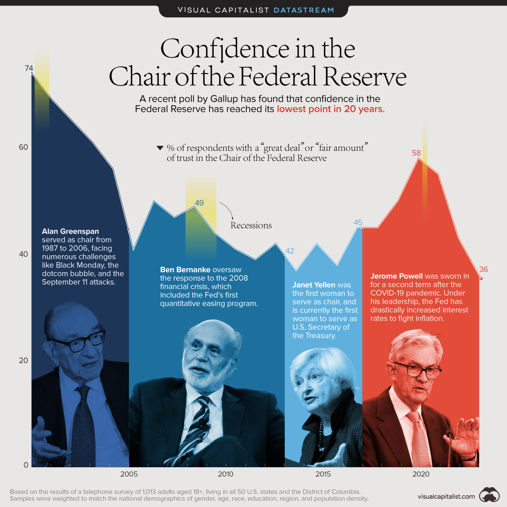

Abstract
The purpose of this thesis is to examine the effects of the Federal Reserve’s recent bond buying programs, specifically Quantitative Easing 1, Quantitative Easing 2, Operation Twist (or the Fed’s Maturity Extension Program), and Quantitative Easing 3. In this study, I provide a picture of the economic landscape leading up to the deployment of the programs, an overview of quantitative easing including each program’s respective objectives, and how and why the Fed decided to implement the programs. Using empirical analysis, I measure each program’s effectiveness by applying four models including a yield curve model, an inflation model, a money supply model, and an economic activity model. By and large, each stimulus effort added value in varying proportions, albeit QE1 negatively influenced the economy in some regards.
